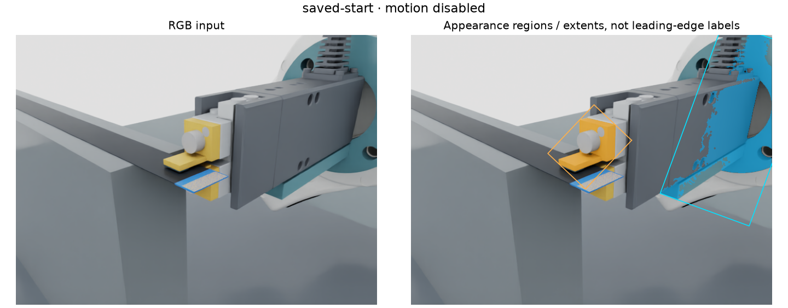
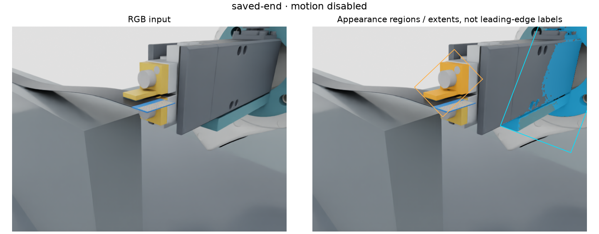
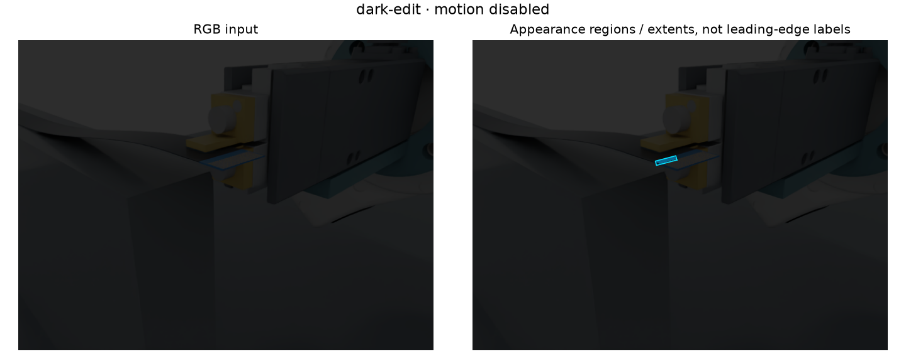
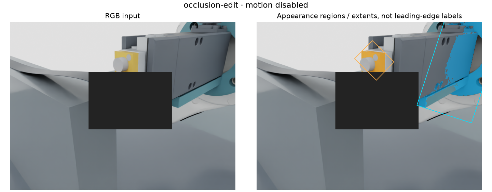
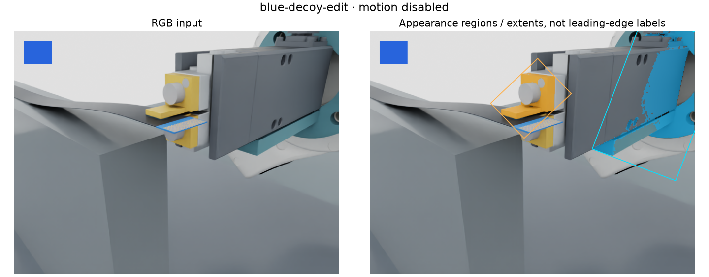
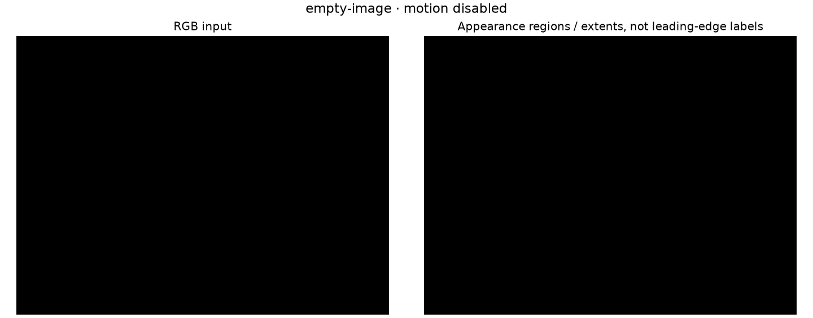

saved-start
Saved human-view RGB, initial pose
Reported: terminal_ambiguous_or_clipped, leading_edge_unverified

Input pixelsHistorical preparation record. Docker access has since been restored. See the completed Isaac capture.
Review preparation, not a passed perception milestone. Fresh Isaac capture is pending because this session cannot access Docker. This page reviews two saved human-view images and four diagnostic image edits. They are not calibrated macro-camera frames or independent held-out scenes.
The baseline uses colour to find candidate blue terminal and yellow tool regions. Boxes show image extents. They do not establish the physical leading edge, grasp position or insertion target. In the saved views, this simple colour baseline picks up the blue adapter/tool shading as well as the terminal and rejects the result as ambiguous; it has not solved terminal localization. Every result keeps motion disabled and slip unverified.
The proposed fixed camera reuses the Basler ace 2 / Kowa 35 mm simulation reference at 45°, with native optical dimensions and a half-resolution 1224 × 1024 output. Placement, occlusion, mount clearance and physical calibration still need review. The next capture exports raw RGB, intrinsics, camera transforms, clock identity and hashes.
Read all measurements and source hashes · Capture instructions and review criteria
Saved human-view RGB, initial pose
Reported: terminal_ambiguous_or_clipped, leading_edge_unverified

Input pixelsSaved human-view RGB, lifted pose
Reported: terminal_ambiguous_or_clipped, leading_edge_unverified

Input pixelsImage multiplied by 0.2; not a physical exposure simulation
Reported: tool_not_resolved, leading_edge_unverified

Input pixelsAdded rectangular obstruction; not a new scene
Reported: terminal_ambiguous_or_clipped, leading_edge_unverified

Input pixelsAdded blue region exposes colour-only ambiguity
Reported: terminal_ambiguous_or_clipped, leading_edge_unverified

Input pixelsSynthetic absent-input negative
Reported: terminal_not_resolved, tool_not_resolved, leading_edge_unverified

Input pixelsNext: render the proposed camera, label visible leading edge and occlusion independently, compare a learned edge estimate, and evaluate repeatable relative pose with uncertainty. Image centroid changes alone cannot establish mechanical slip.